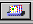
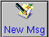
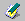

Reading and Composing Mail in Messenger
Once you have configured your accounts in Communicator, you can begin using Messenger to send and receive e-mail and newsgroup postings (turn to the section called Using Messenger to Read News to learn how to set up your news preferences).
You can start Messenger in the following ways:
Select Communicator => Messenger from the menu.
Press Alt-2
From the Component Bar -- Select the mail icon, which looks like: 
The Netscape Mail & Newsgroups dialog which opens will look like Figure 7-12.
To compose e-mail, go to the Toolbar and click on the New Msg icon: 
You can also create e-mail by right-clicking on the Inbox and selecting New Message from the menu. Or you can use your Alt-M keys to quickly open the Compose dialog for e-mail.
 | Creating a plain text letter |
|---|---|
If you set your preferences to create e-mail and newsgroup documents in HTML format, press the Shift => New Msg icon to create a message in plain text. Alternately, you can use the Shift => New Msg icon to create HTML-formatted documents if you selected to create your messages in plain text formatting. |
The Compose dialog will look like Figure 7-13.
Note that the title bar, at the top of the Compose dialog, will show the subject of your letter (as in Compose: Type in your subject here in Figure 7-13) once you save your message by clicking on the Save icon on the Toolbar.
In the address field, you can specify the following options:
To: The primary recipient(s) of your letter
Cc: To send a carbon copy to one or more recipients
Bcc: To send blind carbon copies to recipients whose identity you want to remain private
Reply-To: For specifying an e-mail address to which you want replies sent.
Newsgroup: To send your message to a newsgroup (such as linux.redhat.misc).
Followup-To: To specify an e-mail address you want to use for any posts to newsgroups.
In the address field, enter the e-mail address of your intended recipient, then press Enter to go to a blank address field. In each address field, you can specify address options by selecting one from the drop-down menu next to the address.
When you're finished typing in your addresses, press the Tab key to go to the subject field. Type the subject of your letter in this field and press the Tab key.
Now, type the body of your letter. When you're finished, click on the Send icon on the Toolbar to send your e-mail.
That's it for creating and sending basic e-mail. However, Messenger provides some useful extras for attaching files, making sure that your letter has been received and more.
Other E-Mail Options
If you want to send someone a Web page or a file on your computer, you can attach the document to your message. Click on the paperclip icon either on the Toolbar or on the tab beneath the address field.
For example, if you want to attach a page from the Web, click on the paperclip icon, and select Web Page from the menu. In the dialog that opens, type the URL, or website address, as in Figure 7-14.
When you have finished typing in the URL, click on the Attach button. In your letter, you'll see that the URL has been included with your letter (see Figure 7-15).
When you send your letter, the page associated with the URL you had typed will be sent with your letter, as well.
| Drag and drop Web pages |
|---|---|
You can also "drag" a URL from Navigator's Location Toolbar and "drop" it in your letter. In your letter, click on the paperclip icon under the address field. Now, from Navigator, go to the Location Toolbar and hold down your mouse button over the nearby bookmark icon, which looks like this:  Now, drag the icon to the attachments field of your letter. |
In the same way that you attach Web pages to your letter, you can attach files on your computer. When you select Attach from the Toolbar or beneath the address field, choose File from the menu. The Attach File dialog will open, showing you the contents of your login directory (see Figure 7-16).
| Drag and drop files |
|---|---|
You can drag files from your desktop or from your file manager in the same way that you can drag URLs from Navigator. Just hold your mouse button over the file you want to attach, and drag it to the attachments field of your letter. |
Have you ever wondered whether your e-mail was actually read, or even received? Messenger can send you a return receipt to confirm that your mail arrived and was opened.[1]
Messenger supports two kinds of return receipts:
Delivery receipts -- notify you that your mail was delivered to the inbox of your intended recipient on their mail server
Read receipts -- notify you that the recipient has opened your message
To specify preferences for return receipts, go to Edit => Preferences => Mail & Newsgroups => Return Receipts. In the dialog which opens (see Figure 7-17), choose how you want to use return receipts for mail you send and mail you receive.
To activate receipt notification, in your message go to View => Options and check Request return receipt. You can also click on the options tab beneath the attachments tab, or click on the Options menu on the Toolbar.
For more information about e-mail options, such as address books, filtering e-mail and more, refer to Netscape Communicator's documentation, in the Help menu.